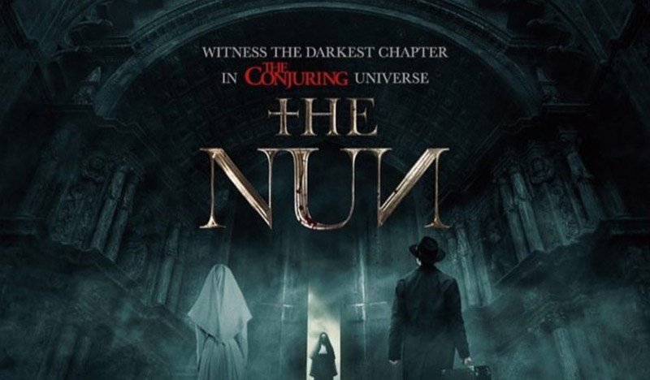

The Nun Review by Abhijith A G | A Good Mystery Movie Than a Horror Movie

Posted By : Abhijith A G | Date : 07-08-2018
Horror / Mystrey/ Thriller

2016ലെ കൊഞ്ചുറിങ് സിനിമയിലെ Valak ഇന്റെ ഒറിജിൻ സ്റ്റോറി ആണ് "The Nun" Ed & Lorraine എന്ന രണ്ടു Paranormal Investigators അവരുടെ റിയൽ ലൈഫ് അനുഭവങ്ങളുടെ സിനമകളുടെ സീരിസിലെ അഞ്ചാമത്തെ സിനിമയാണ് "The Nun"
1952 ഇൽ റോമാനിയയിലെ ഒരു ചർച്ചിൽ ദുരൂഹമായി നടക്കുന്ന സിസ്റ്ററിന്റെ ആത്മഹത്യാ അനേഷിക്കാനായി Vatican നിൽ നിന്നും ഫാദർ ബ്രൂക്ക് & സിസ്റ്റർ ഐറിൻ എന്നിവർ എത്തുന്നു .സിസ്റ്റർ മരിച്ചതിന്റെ കാരണം മാത്രമല്ല അവർക്കു കണ്ടുപിടിക്കേണ്ടത് അവിടെ വീണ്ടും വിശുദ്ധി വരുത്തേണ്ടതും ഉണ്ട്. കൊഞ്ചുറിങ് യൂണിവേഴ്സിലെ ഇനി വരാൻ പോകുന്ന സിനിമയുടെ ഒരു ക്ലൂ തന്നാണ് സിനിമ അവസാനിക്കുന്നത്. കൊഞ്ചുറിങ് യൂണിവേഴ്സിലെ മറ്റു സിനിമകളെ പോലെ താനെ ബാക്ക്ഗ്രൗണ്ട് മ്യൂസിക്കും അവതരണവുമെല്ലാം മികച്ചു നിന്നു ക്ലിഷേ നിമിഷങ്ങൾ നിറഞ്ഞ പേടിപ്പെടുത്തുന്ന അവതരണം ഉണ്ടെകിലും ഒരു ഹോർറോർ ത്രില്ലെർ നേക്കാളും മിസ്ടറി വരുന്ന valak ഇന്റെ സ്റ്റോറി അതിലാണ് സിനിമ കൂടുതൽ സമയവും. ഒറിജിൻ സ്റ്റോറി ആയിട്ടു നോക്കിയാൽ മികച്ചതാണ് സിനിമ എന്നാൽ മൊത്തം കൊഞ്ചുറിങ് യൂണിവേഴ്സ് സിനിമകൾ നോക്കിയാൽ ഒരുതവണ കാണാൻ ഉള്ളതുണ്ട്.
Final Verdict: കുടുതലും മിക്സഡ് മുതൽ ആവറേജ് റിവ്യൂസ് ആയിരുന്നു പ്രിവ്യു ഷോ കഴിഞ്ഞത് മുതൽ അതുകൊണ്ടു വലിയ പ്രേതിക്ഷ ഇല്ലാതെ ആണ് കാണാൻ പോയത് എന്തായാലും തിയേറ്ററിൽ നിരാശപ്പെടാതെ കാണാൻ ഉള്ളത് ഉണ്ട്
My Rating : 3/5
You can check everything tou wanna know about the movie from: The Nun